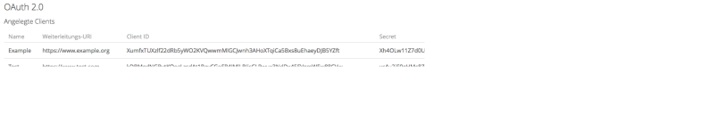

Benutzung
Installation
Da die Anpassungen durch den Pull Request owncloud/core#26742 erst kürzlich in den ownCloud Core aufgenommen wurden, sind sie noch in keiner Hauptversion enthalten. Es muss daher der aktuelle Stand aus dem Repository heruntergeladen werden:
$ git clone https://github.com/owncloud/core.git
Danach müssen die Abhängigkeiten aufgelöst werden. Dazu genügt es, im Verzeichnis des Repositorys folgenden Befehl auszuführen:
$ make
Die restlichen Installationsschritte von ownCloud unterscheiden sich nicht von denen im ownCloud Handbuch.
Die oauth2 App wird dadurch installiert, dass der Inhalt des Repositorys in das Verzeichnis apps kopiert wird:
$ cd apps
$ git clone https://github.com/owncloud/oauth2.git
Danach lässt sie sich wie jede andere ownCloud App in der Administrator-Ansicht aktivieren.
Clientregistrierung
Zur Clientregistrierung muss in der Eingabemaske der OAuth 2 App in den Adminsettings dem Client ein Name gegeben werden und eine gültige URL als redirect URI angegeben werden.
Eine redirect URI bezeichnet eine Adresse, zu der der jeweilige Client nach der erfolgreichen Autorisierung weitergeleitet wird. Setzt man einen Haken im Feld Erlaube Subdomains, so
können auch Subdomains der eingegebenen redirect URI angesprochen werden. Werden beispielsweise verschiedene Anmeldeverfahren wie SSO oder XSSO über Subdomains aufgerufen, so funktioniert
die Authentifizierung über OAuth 2.0 auch bei diesen Anmeldeverfahren und nicht nur mit dem der "Hauptdomain".
Mit Betätigung des OK-Buttons wird der Client registriert, erhält eine ClientID und ein Clientsecret zugewiesen und wird nun in der Tabelle mit den entsprechenden Attributen dargestellt.
Screenshot zur Darstellung der Clients:

Größere Darstellung des Clients:
Zu beachten ist der Zeilenumbruch zur größeren Darstellung und die moodle-typische redirect URI.
Widerrufung der Autorisierung
Zur Widerrufung der Autorisierung muss diese in den Einstellungen per Klick auf den entsprechenden Button widerrufen werden. Dies ist für den Nutzer in den persönlichen Einstellungen möglich, durch Klicken des Mülleimer-Symbols rechts neben dem jeweiligen Eintrag. Nachdem auf das Symbol geklickt wurde, erscheint auch hier eine Sicherheitsabfrage, in der man die Löschung bestätigen muss.
Screenshot zur Darstellung der autorisierten Anwendungen:
Screenshot zur Sicherheitsabfrage bei Löschung einer autorisierten Anwendung:
Löschen der Clientregistrierung
Bei Bedarf kann ein Client beziehungsweise eine Clientregistrierung gelöscht werden. Dies kann notwendig sein, wenn sich
beim Client die redirect URI geändert hat, oder man dem Client einfach nicht mehr den Zugriff gewähren möchte. Dadurch, dass
ein Client gelöscht wird, kann dieser nun nicht mehr auf Dateien aus der ownCloud-Instanz zugreifen und die ausgestellten Authorization
Codes, Access und Refresh Tokens sind ungültig. Durch irrtümliche Löschung des Clients muss bei Wiedereintragung des Clients jeder
Nutzer des Clients erneut das Authentifizierungsverfahren durchlaufen.
Um eine Clientregistrierung zu löschen muss in den Adminsettings die tabellarische Ansicht der registrierten Clients ausgewählt werden.
Nun kann man bei dem zu löschenden Client rechts neben den zugeordneten Attributen auf ein Mülleimer-Symbol klicken, um die entsprechende Clientregistrierung zu löschen.
Nachdem auf das Symbol geklickt wurde, erscheint noch eine Sicherheitsabfrage, in der man die Löschung bestätigen muss.
Screenshot zur Sicherheitsabfrage bei Löschung des Clients: